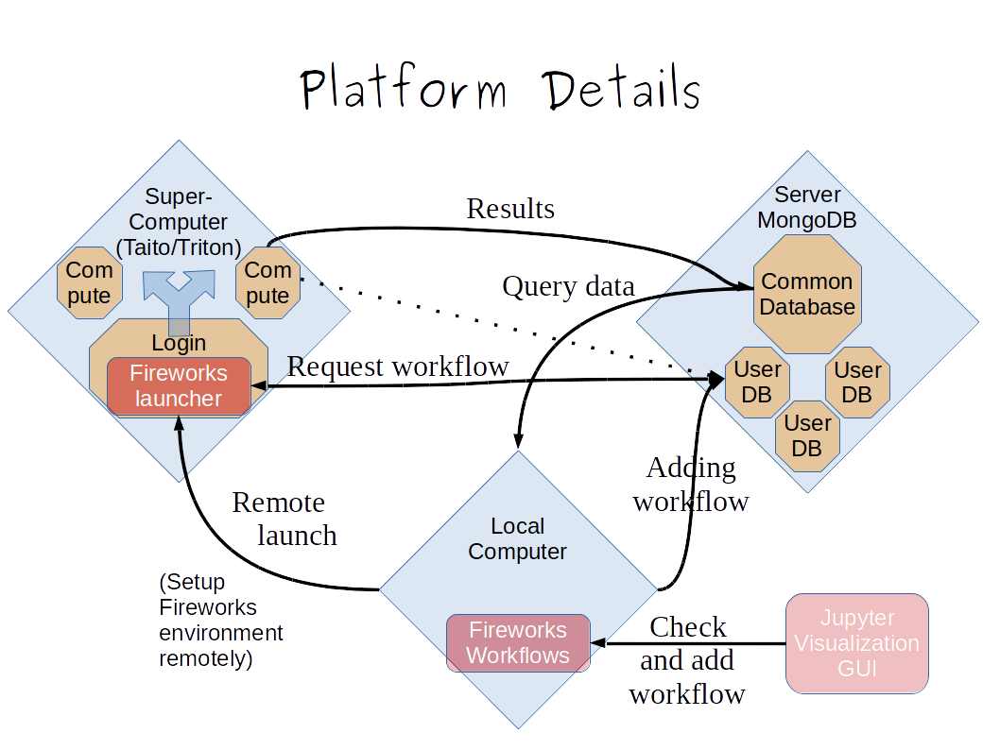

Quickstart¶
Critcatworks is a workflow manager for nanoclusters built on top of Fireworks. The image below gives a technical overview of the platform.
{kind=link}
There are three puzzle-pieces put together: First, the database server, second, the supercomputing ressource(s) and lastly, the user’s computer. In its simplest form, the latter can be the login node of the supercomputer.
Setup¶
First, you are required to have access to a mongodb database, without it Fireworks cannot run. If you want to setup one, either get a small, free playground on MongoDB Atlas, or download and install mongodb on your own server ( MongoDB Download-center ). A shared database to store the data permanently is also based on MongoDB, so it is possible to use the same infrastructure for both. Be aware, that Fireworks uses one database internally, and critcatworks uses another database to retrieve and store information permanently.
Next, critcatworks should be installed on the login node of the supercomputer and optionally on your local computer (Installation).
The workflows are submitted to the queue using the fireworks command-line tools (and corresponding python functions). In order to familiarize yourself with the usage, it is recommended to read a few tutorials (Fireworks Tutorials).
Constant submission of jobs to the queue is realized by a python script constantly running in the background of the login node of the supercomputing ressource. The script is lightweight, but it is optional to use.
Communication with the database server needs to be possible from 1. the user’s computer 2. the login node of the supercomputer 3. any of its compute nodes
If you suspect that any of the above connections might be blocked, inspect them using tools like nmap. For instance, the ressources triton, vilje and taito allow for such communications, whereas sisu does not.
Test example¶
Once the pieces are in place, a lightweight example workflow can be run. It is recommended to always use a classical mechanics cp2k input template first, in order to see whether a workflow is running without problems.
For instance, in tests/lj_runs you can find examples which are not heavy. You can also skip the DFT step entirely setting the argument skip_dft = True.
1. For the sake of testing the setup, in tests/lj_runs open
nanoclusters.py and set skip_dft = True. Set worker_target_path to an existing directory on your ressource.
2. In nanoclusters.py, also change username, password and extdb_connect to connect to your mongodb database. Your Fireworks launchpad should also be set up correctly.
3.
python3 nanoclusters.py
4. Make a yaml file which as the launchpad points to the mongodb database.
5. run lpad -l YOURYAMLFILE get_wflows
to check if the workflow is registered
6. Then, if you are testing on a supercomputer, it is recommended to start an interactive session to not overload the login node (salloc command on slurm systems).
7. Run the workflow with
rlaunch -l YOURYAMLFILE rapdifire
8. In another terminal, check the status with
lpad -l autogenerated_launchpad.yaml get_wflows
9. You can in more detail query the status of your workflow
with the fireworks command line tool. See lpad --help for more information.
10. Query the results in the permanent database through pymongo or the mongo shell. In the future, an API will be provided to facilitate a fast examination of the results. Useful scripts are beeing added to the folder gui.
Queue Test¶
In order to test if critcatworks runs smoothly with the queueing system, follow these additional steps
Go to tests/lj_runs
Change worker_target_path, username, password and extdb_connect in nanoclusters.py. Your Fireworks launchpad should also be set up correctly.
python3 nanoclusters.pyOnce the workflow is added to the launchpad, the jobs can be run through a simple script running in the background of your computing ressource. It can be found in utils/loop_launches.py
Copy that script to tests/lj_runs. Change in the same way username, password and Fireworks launchpad in loop_launches.py
python3 loop_launches.pyIn another terminal, check the status with
lpad -l autogenerated_launchpad.yaml get_wflows
DFT runs¶
If the tests have run smoothly, it is time to try it with DFT. A few examples are given in the examples folder.
Note a few important points to run a workflow:
Launchpad is connecting to the Fireworks internal MongoDB database.
Reset the launchpad only if you have no other workflow running!
Upload without error.
There is a second, permanent MongoDB database. username and password are supplied as arguments to the workflow. If you want to use a database other than the default (testdb), specify it in the extdb_connect argument as a dictionary.
worker_target_path should be an absolute path to the directory where the DFT calculations should be run.
template_path is your CP2K template file. Structure and cell are modified on the fly, other parameters remain constant during a workflow. Examples can be found in examples/templates
In utils/loop_launches.py, please provide the same launchpad information. Make sure to adapt the ressources you need in lightweight, medium, large and dft jobs (The jobs are already precategorized). E.g. machine learning is categorized as medium but its runtime depends on the amount of datapoints, so choose the walltime accordingly. A file called autogenerated_launchpad.yaml is generated which is the yaml representation of the launchpad specified in python.
These are the essentials to get you started. Visit the other tutorials to learn more about the workflows. If you run into problems, go through the Checklist. If you still have problems, please raise an issue on github.